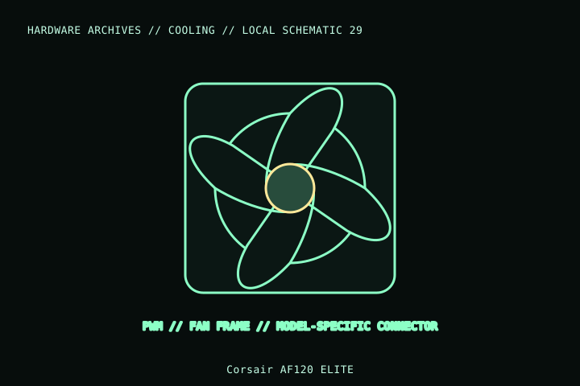

[ INDIVIDUAL COMPONENT // COOLING ]
Corsair AF120 ELITE
A 120 mm AF ELITE-series 4-pin PWM fan, distinct from AF RGB ELITE and older AF120 generations. This record refers to the black non-RGB CO-9050174-WW unit.

MODEL IDENTIFICATION: Verify full model, suffix, SKU, generation, connector, and host-support documentation against the physical item. The record describes only the identified model and does not guarantee host compatibility.
Specifications
| Exact identity | AF120 ELITE, black, CO-9050174-WW |
|---|---|
| Frame | 120 × 120 × 25 mm |
| Speed / control | Up to 1,850 rpm; 4-pin PWM |
| Electrical rating | 12 V DC; up to 0.29 A per Corsair specification |
| Mount / host fit | 120 mm fan mount; verify screw pattern, 25 mm depth, header current, and whether the application needs a different AF RGB or SP series. |
Compatibility and installation
- Verify the CO-9050174-WW non-RGB SKU; cable and lighting behavior differ on AF RGB ELITE products.
- Connect the 4-pin fan lead to a rated PWM header/controller; avoid exceeding the header’s aggregate current rating.
- Check fan orientation and 25 mm frame clearance at the radiator, filter, GPU, and side panel.
Service notes
Disconnect power before dusting; restrain the rotor to avoid overspin. Inspect fan wiring and mounting points and replace the unit if the frame or bearing is damaged.
Manufacturer references
- Corsair — AF120 ELITE PWM fanManufacturer listing for the black, non-RGB AF120 ELITE model/SKU.
- Corsair — SupportManufacturer setup and service references.
Model variants and revisions may change specifications or included hardware; the manufacturer’s exact product page/manual and the host manual take precedence.